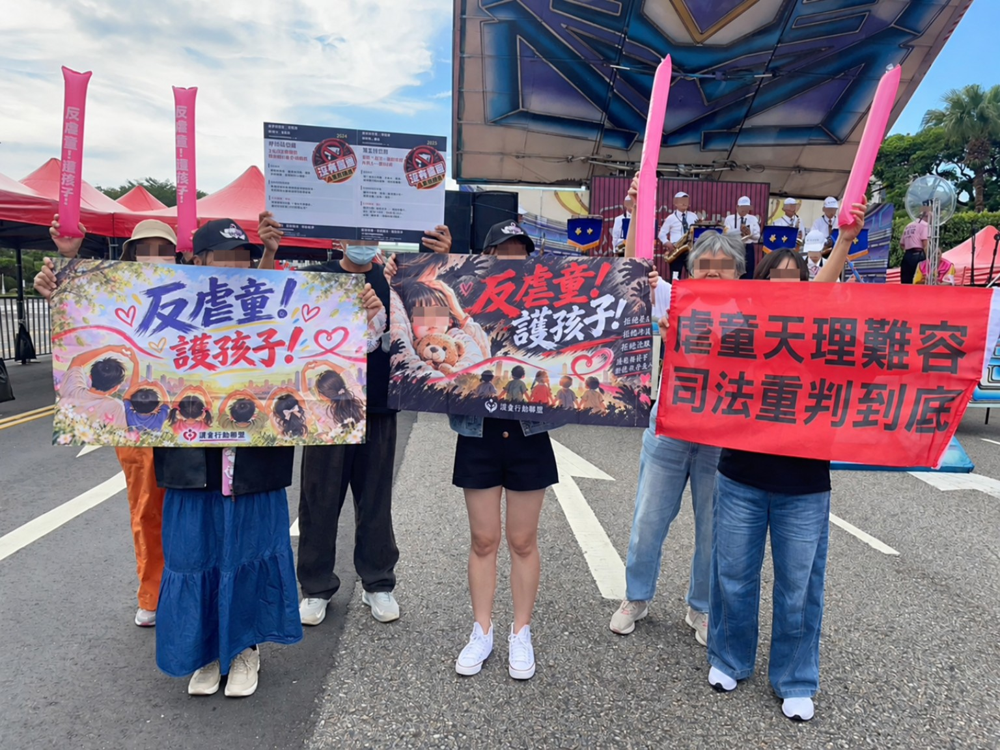

10月17日「反虐童！护孩子！」行动纪录
让每一次看见，都成为守住孩子的力量。

今天，我们带著对孩子的牵挂走上街头。从集合、发声到彼此鼓励，参与者以安静而坚定的方式，表达同一个诉求：当孩子遭受伤害、当警讯一再被忽视，制度不能只留下遗憾与道歉。
2026 · 10 · 17行动已圆满结束。谢谢每一位到场、关注、分享讯息与持续发声的人。
我们持续看见的事
- 通报是否被认真接住，不能只停在制度文字。
- 访视与安置是否真正抵达孩子身边，必须被持续检验。
- 医疗、教育、社政与司法的衔接，不能让高风险孩子再度被遗漏。
- 个别责任与制度改善，都应有可被检视的回应。
反虐童不只是某一天的集会，也不只是某一个案件的讨论。今天的行动暂时落幕，但守护孩子的路不会停下。孩子不该用受伤，换来大人终于看见。
#反虐童护孩子 #行动纪录 #守护孩子
现场影片
10月17日的行动片段。
现场纪实
把声音带到街头，把守护带向明天。
更多现场照片
点击照片可开启大图。